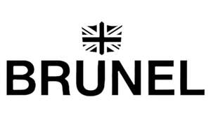

Trade Mark Journal No.2025/021 23 May 2025
UK00004199650 7 May 2025 (14)

- Class 14
- Watches; Chronographs for use as watches; Chronographs [watches]; Dials for watches; Clocks and watches; Watches and clocks; Wrist watches; Bracelets for watches; Quartz watches; Wristlet watches; Sports watches; Movements for clocks and watches; Pendant watches; Alarm watches; Pocket watches; Diving watches; Silver watches; Housings for clocks and watches; Mechanical watches; Chains for watches; Parts for watches; Cases for watches and clocks; Oscillators for watches; Automatic watches; Dress watches; Bands for watches; Electronic watches; Women's watches; Solar watches; Stop watches; Clocks and watches, electric; Electric watches; Table watches; Platinum watches; Divers' watches; Watch dials; Wristwatches; Watches made of gold; Watches for sporting use; Timepieces; Watch bracelets; Chronographs for use as timepieces; Watches bearing insignia; Parts and fittings for watches; Digital watches with automatic timers; Electronically operated movements for watches; Watches for outdoor use; Watch movements; Straps for wristwatches; Watches made of precious metals; Electrically operated movements for watches; Watches made of plated gold; Clock and watch hands; Watch and clock hands; Mechanical watches with manual winding; Mechanical watches with automatic winding; Watches made of rolled gold; Wristwatches with pedometers; Watch crowns; Watch chains; Watch parts; Watches incorporating a telecommunication function; Watches incorporating a memory function; Watchbands; Wristwatches with pedometer feature; Horological instruments having quartz movements; Electrical timepieces; Oscillators for timepieces; Electronic timepieces; Quartz clocks; Watches made of precious metals or coated therewith; Watches with the function of wireless communication; Watches with wireless communication function; Mechanical watch oscillators; Electric timepieces.
Sam Remblance
Representative: GCS Europe Ltd